iPhone・iPad｜AltStore PALでできること【代替アプリストア】
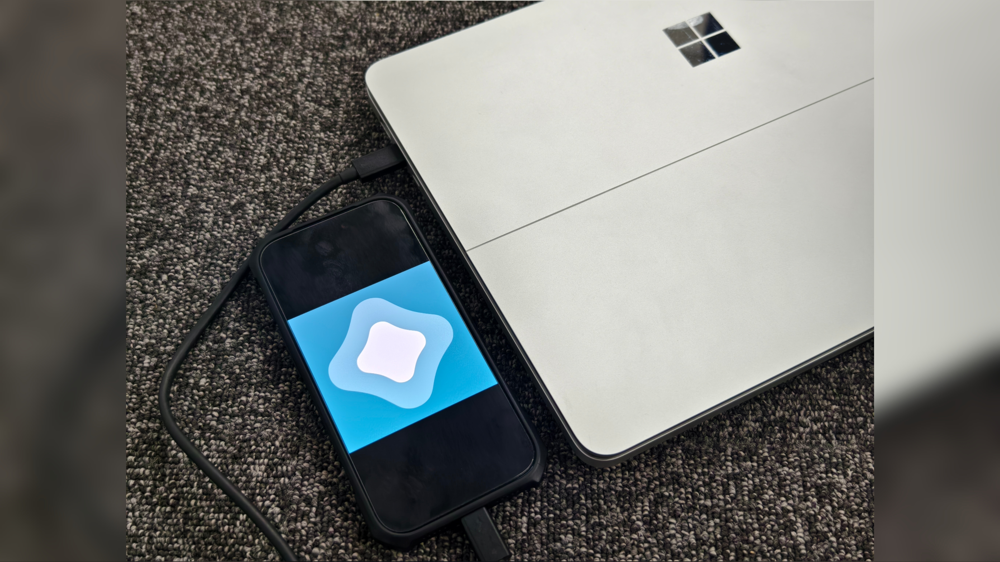
スマホ新法による日本で代替アプリストアの解放およびサイドロードの制限緩和
サイドロードとは、iOSならApp Store、AndroidならGoogle Play Store以外からアプリをインストールすることを指す。 これにより、アプリを特定のバージョンに戻したり、正規のアプリストアで配信されていないようなアプリをインストールできる。 Androidはapkと呼ばれるファイルを入手することで直接サイドロードできるが、iOSは制限が厳しく、AppStore以外のアプリストアは使えず、さらにサイドロードも主に開発者向けに制限されてきた。 しかし、Appleは2025年3月にEUで、2025年12月18日にiOS 26.2にアップデートしたユーザーを対象に日本で代替アプリストアの解放とサイドロードの制限緩和を実施した。 これによりAppStore以外から代替アプリストア経由で非公式アプリをインストールできるようになったが、Androidのような完全なサイドロードとは異なる。 ここでは、代替アプリストアとして有名なAltStore PALでできること、既存のサイドロードとの違いを解説する。
目次
AltStore PALのインストール
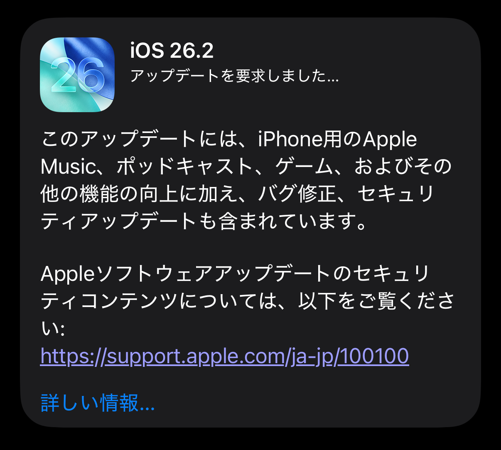
ここではAltStore PALのインストール手順を解説する。 事前にiOS 26.2以降へのアップデートが必要になる。
方法
1.AltStore PALをインストールする
以下のリンクからAltStore PALのサイトを開く。
2. "Download" をタップする
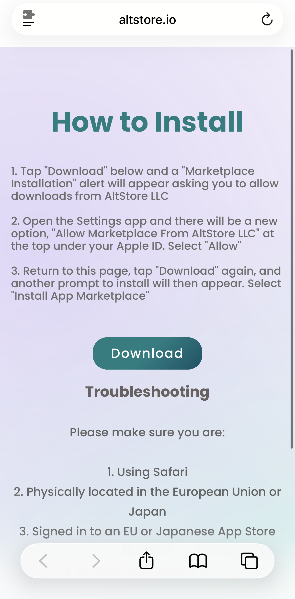
3. "設定" をタップする
ここで自動的に設定アプリへ遷移する。
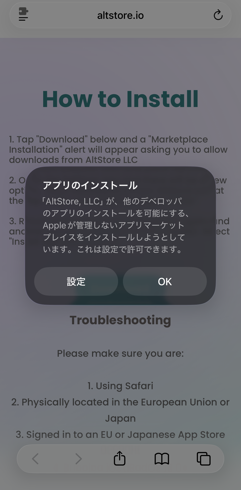
4. "アプリのインストールを管理する" をタップする
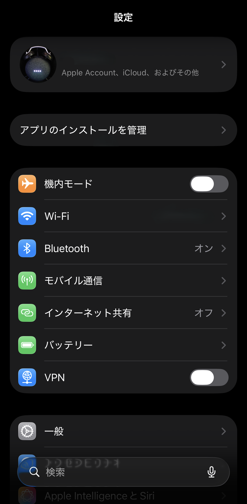
5. "アプリマーケットプレイスからのインストール" で "常に許可" をタップする
ここで常に許可をタップすると、AltStore PALでアプリをインストール際に毎回設定アプリを開いて承認する必要がなくなる。
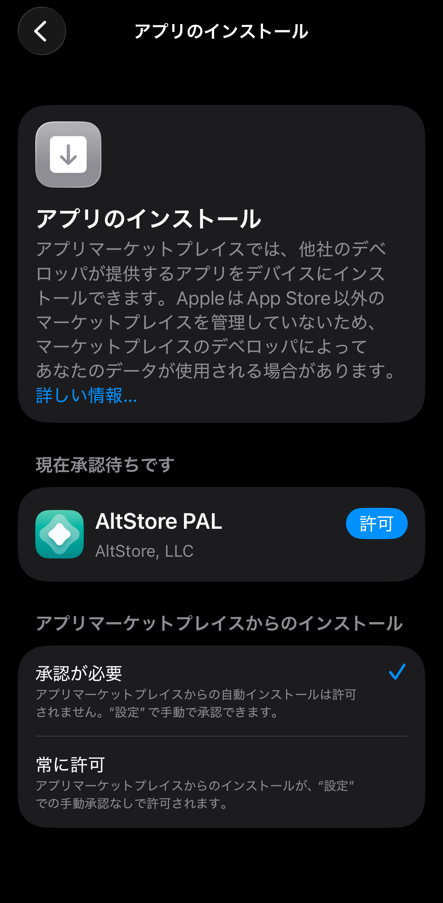
6. "AltStore PAL" の横の "許可" をタップする
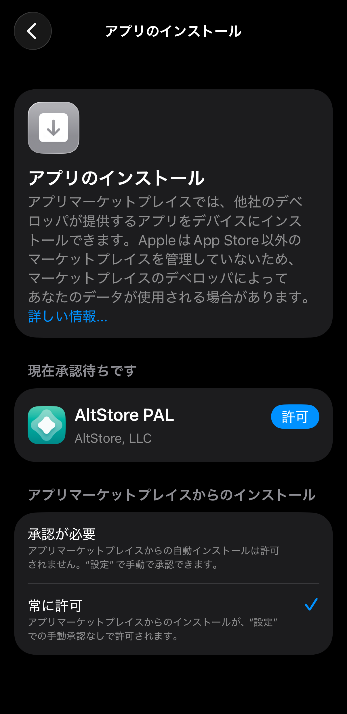
7. "許可" をタップしてサイドボタンで承認する
AppStoreでのアプリインストールと同じように、サイドボタンで承認後にAltStore PALがインストールされる。
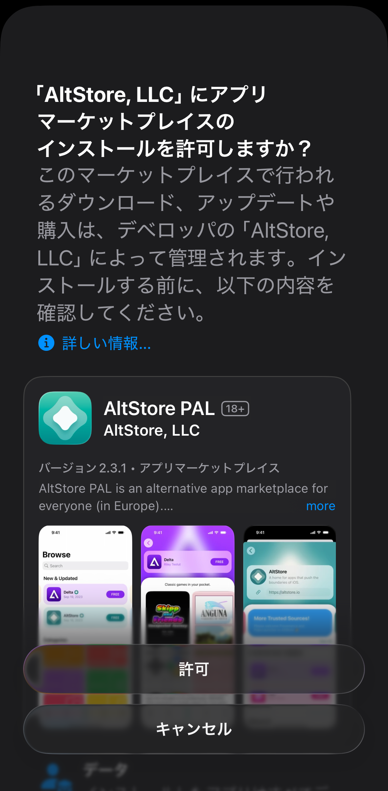
AltStore PALでのソース追加
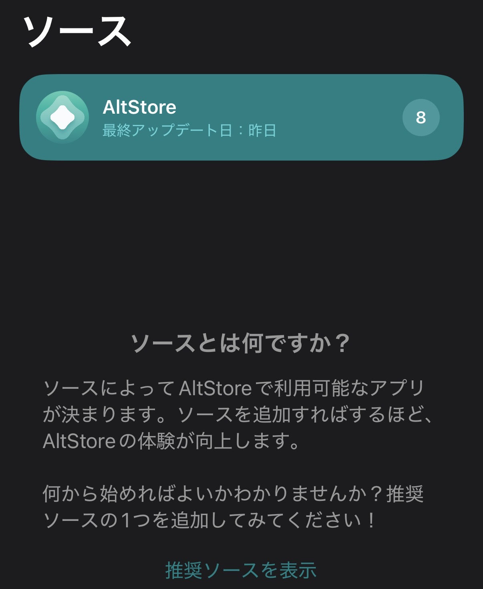
ここではAltStore PALでのアプリのソース追加方法を解説する。
方法
1.AltStore PALを開き、 "ソース" タブで左上の "+" をタップする
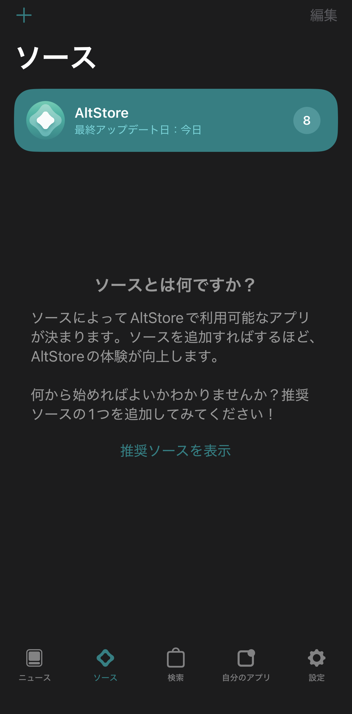
2.入力欄にソースのURLを入力する
AltStore PAL向けのソースのURLを追加する。 以下のリンクはソースのURLがまとめられたRedditのスレッドのリンクである。
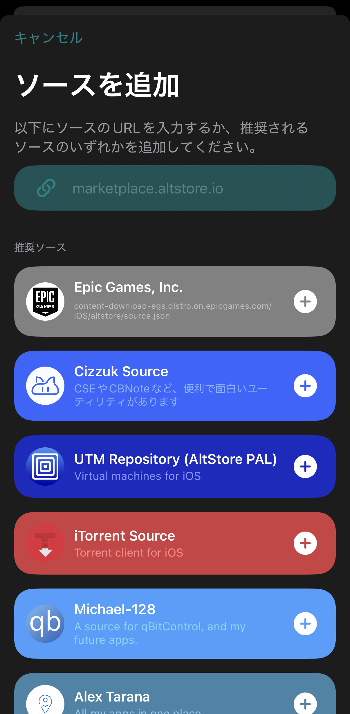
3.追加したソースの横の "+" をタップする
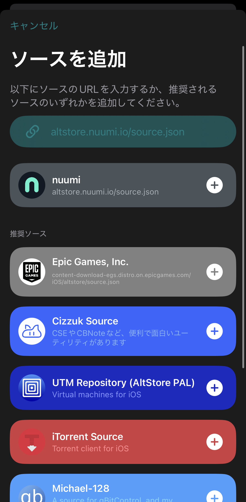
4. "ソースを追加" をタップする
"ソース" タブに追加したソースが表示され、それに含まれるアプリをインストールできるようになる。
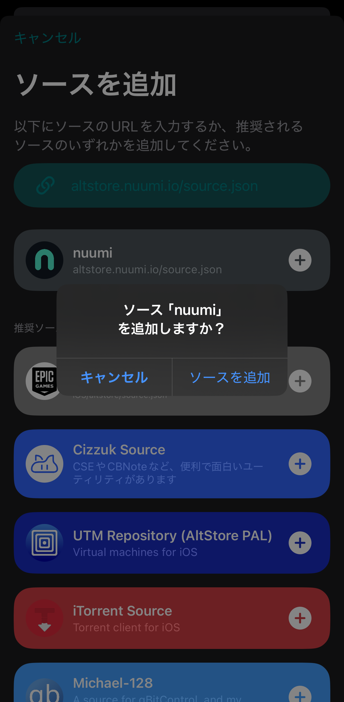
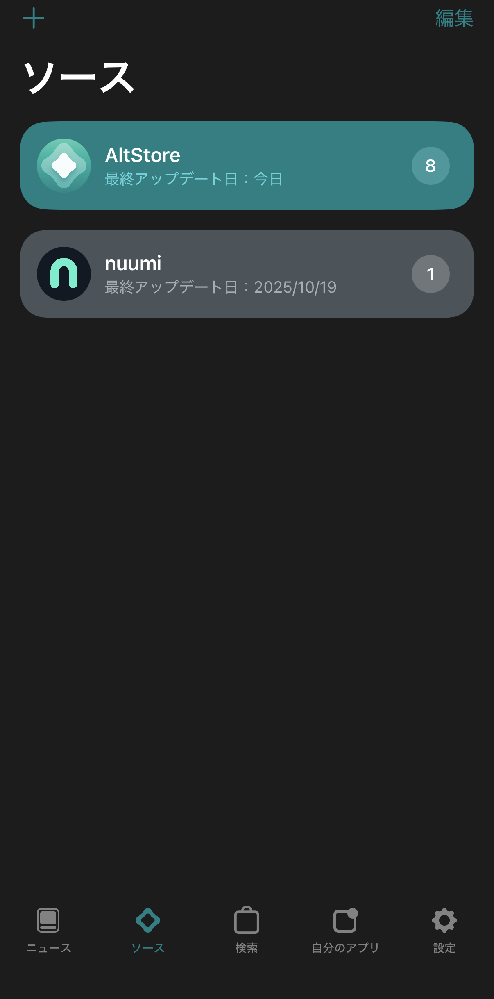
AltStore PALでのアプリインストール
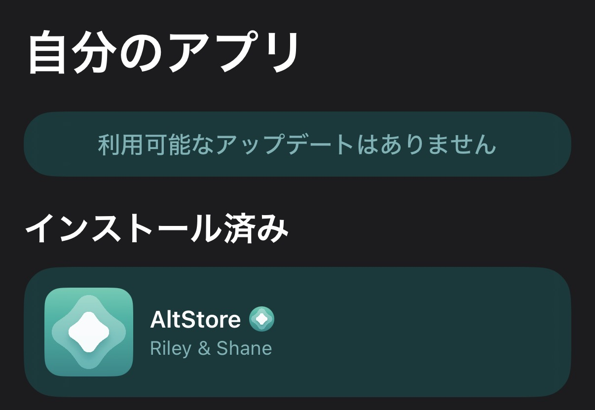
ここではAltStore PALでのアプリのインストール方法を解説する。
方法
1.インストールするアプリの横の "無料" または "インストール" をタップする
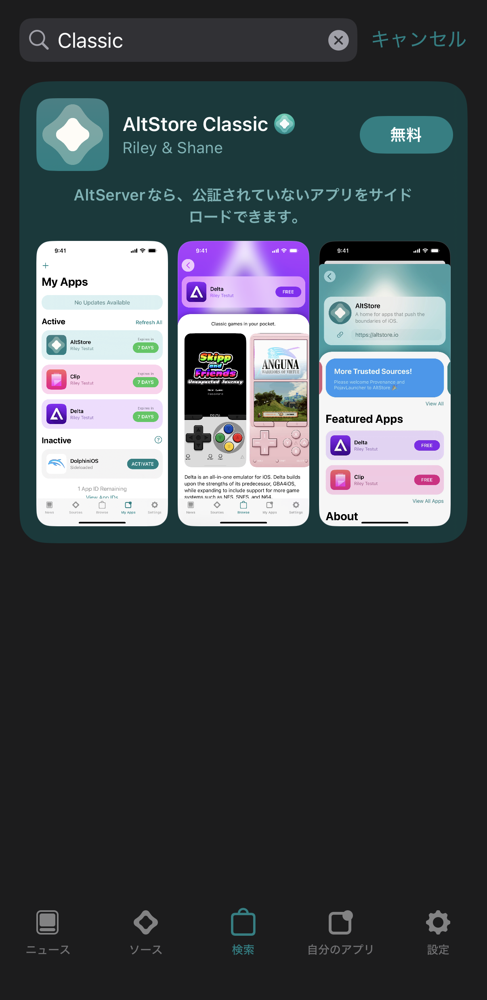
2. "インストール [インストールするアプリ名]" をタップする
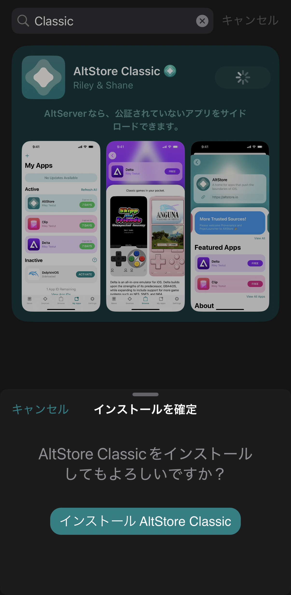
3. "アプリをインストール" をタップしてサイドボタンで承認する
AppStoreでのアプリインストールと同じように、サイドボタンで承認後にアプリがインストールされる。
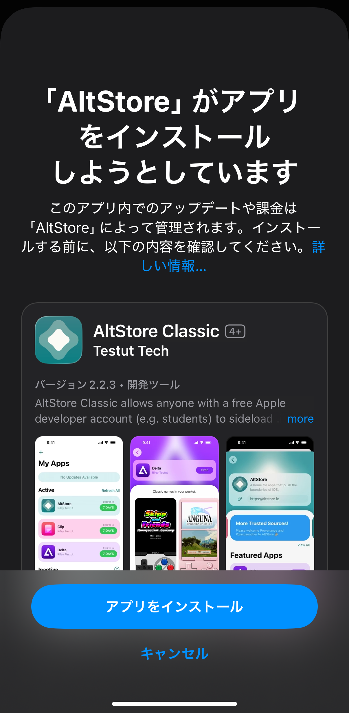
AltStore PALでできること

AltStore PALによって、AppStoreで配信されていないアプリがインストールできるようになった。 ここでは、現在追加できるアプリの一部を紹介する。 ちなみにEpic GamesのソースにはFortniteやFall Guysが表示されるものの、現状日本では利用できない。
･AltStore
 AltStoreより引用
AltStoreより引用
PCに接続してIPAからアプリを2つまでサイドロードできる、AltStore PALの上位互換のようなアプリ。 AltStoreのソースから追加できる。
･Clip
クリップボードの履歴を管理できるようになるアプリ。 AltStoreのソースから追加できる。
･Delta
レトロゲームをプレイできるエミュレーターアプリ。 AltStoreのソースから追加できる。
･Customize Search Engine
Safariの検索エンジンをカスタマイズしたり、検索結果からAIの要約を非表示できるようになるアプリ。 Cizzuk Sourceのソースから追加できる。
･WebA11Y
Webサイトを表示する際に文字のフォントや太さを調整したり、リンクやボタンに下線を引けるアプリ。 Cizzuk Sourceのソースから追加できる。
･UTM SE
クラシックなソフトウェアやレトロゲームができる、PCのエミュレーターアプリ。 UTM Repository (AltStore PAL)のソースから追加できる。
完全なサイドロードの解放ではない
スマホ新法で、今までFeatherやEsign、KravaSignerなどのアプリでできていたサイドロードが、証明書なしでできるようになったと思った人も多いだろう。 しかし、今回解放されたのはあくまで代替アプリストアであり、そのアプリストア向けに配信されたアプリしかインストールできない。 つまり、IPAファイルからのサイドロードは未だにできず、すべての非公式アプリが公式にインストールできるようになったわけではない。 また、解放された代替アプリストアで配信されるアプリはAppleの署名や検証を受けているので、Modアプリなどが配信されることは難しいと思われる。 今回の代替アプリストア解放とサイドロード制限緩和は主にApp Storeの寡占を防ぐためのものであり、アプリをApp Store以外からでも配信できるようにすることが目的であったため、さらにセキュリティのリスクが高まるIPAからのアプリインストールは解放されなかった。 IPAからアプリをインストールしたい場合、今まで通り開発者向けの証明書を使うか、AltStore、SideStore、Sideloadlyなどの個人署名ツールを使うしかない。
プロフィール

高度情報社会の最先端を駆け抜ける